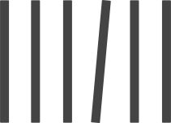

ちょっとズレてると揃えたくなる。

ちょっとズレて置いてある物、ちょっとズレて開いているドア、一巻だけない本棚、中途半端に閉まってる蛇口、そういったちょっと惜しいものがあると直したくなりませんか？僕はなってしまいます。
「あそこさえが揃っていれば」「中途半端に開いてて気になる」「逆にここまでやったのになんで最後までやらないの？」そう思うことは日常茶飯事で、一度気になってしまうと直すまでムズムズします。
絶対揃っていたほうが気持ちいいし、かっこいいし、綺麗。あと揃えるのって楽しくないですか？完璧に揃えたあとの達成感・満足感。そういった感情をもっともっと色んな人に知ってもらいたい。
だから、そういった中途半端なもの、惜しいものを写真に収めて、ギャラリーとして見せようと思いました。これを見て一人でも多くの人が「うわぁ、揃えたい」と感じてもらい、揃えて欲しい。